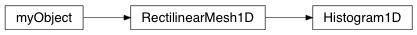

Histogram1D¶
@Histogram_Class Module describing an efficient histogram class
-
class
geobipy.src.classes.statistics.Histogram1D.Histogram1D(bins=None, binCentres=None, log=None)¶ 1D Histogram class that updates efficiently.
Fast updating relies on knowing the bins ahead of time.
Histogram1D(values, bins, binCentres, log)
Parameters: - bins (geobipy.StatArray or array_like, optional) – Specify the bin edges for the histogram. Can be regularly or irregularly increasing.
- binCentres (geobipy.StatArray or array_like, optional) – Specify the bin centres for the histogram. Can be regular or irregularly sized.
- log ('e' or float, optional) – Entries are given in linear space, but internally bins and values are logged. Plotting is in log space.
Returns: out – 1D histogram
Return type: -
createHdf(parent, myName, nRepeats=None, fillvalue=None)¶ Create the hdf group metadata in file parent: HDF object to create a group inside myName: Name of the group
-
fromHdf(grp, index=None)¶ Reads in the object froma HDF file
-
hdfName()¶ Reprodicibility procedure
-
pcolor(**kwargs)¶ pcolor the histogram
Other Parameters: - alpha (scalar or array_like, optional) – If alpha is scalar, behaves like standard matplotlib alpha and opacity is applied to entire plot If array_like, each pixel is given an individual alpha value.
- log (‘e’ or float, optional) – Take the log of the colour to a base. ‘e’ if log = ‘e’, and a number e.g. log = 10. Values in c that are <= 0 are masked.
- equalize (bool, optional) – Equalize the histogram of the colourmap so that all colours have an equal amount.
- nbins (int, optional) – Number of bins to use for histogram equalization.
- xscale (str, optional) – Scale the x axis? e.g. xscale = ‘linear’ or ‘log’
- yscale (str, optional) – Scale the y axis? e.g. yscale = ‘linear’ or ‘log’.
- flipX (bool, optional) – Flip the X axis
- flipY (bool, optional) – Flip the Y axis
- grid (bool, optional) – Plot the grid
- noColorbar (bool, optional) – Turn off the colour bar, useful if multiple customPlots plotting routines are used on the same figure.
- trim (bool, optional) – Set the x and y limits to the first and last non zero values along each axis.
See also
geobipy.customPlots.pcolor()- For additional keywords
-
plot(rotate=False, flipX=False, flipY=False, trim=True, normalize=False, **kwargs)¶ Plots the histogram
-
summary()¶ Print a summary of self
-
toHdf(h5obj, myName)¶ Write the StatArray to an HDF object h5obj: :An HDF File or Group Object.
-
update(values, clip=False)¶ Update the histogram by counting the entry of values into the bins of the histogram.
Parameters: - values (array_like) – Increments the count for the bin that each value falls into.
- clip (bool) – A negative index which would normally wrap will clip to 0 and self.bins.size instead.
-
writeHdf(parent, myName, index=None)¶ Write the StatArray to an HDF object parent: Upper hdf file or group myName: object hdf name. Assumes createHdf has already been called create: optionally create the data set as well before writing